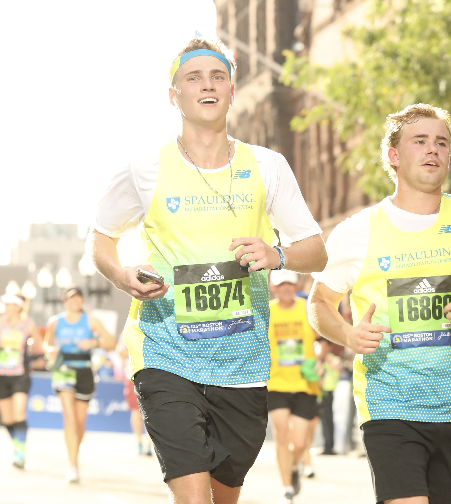
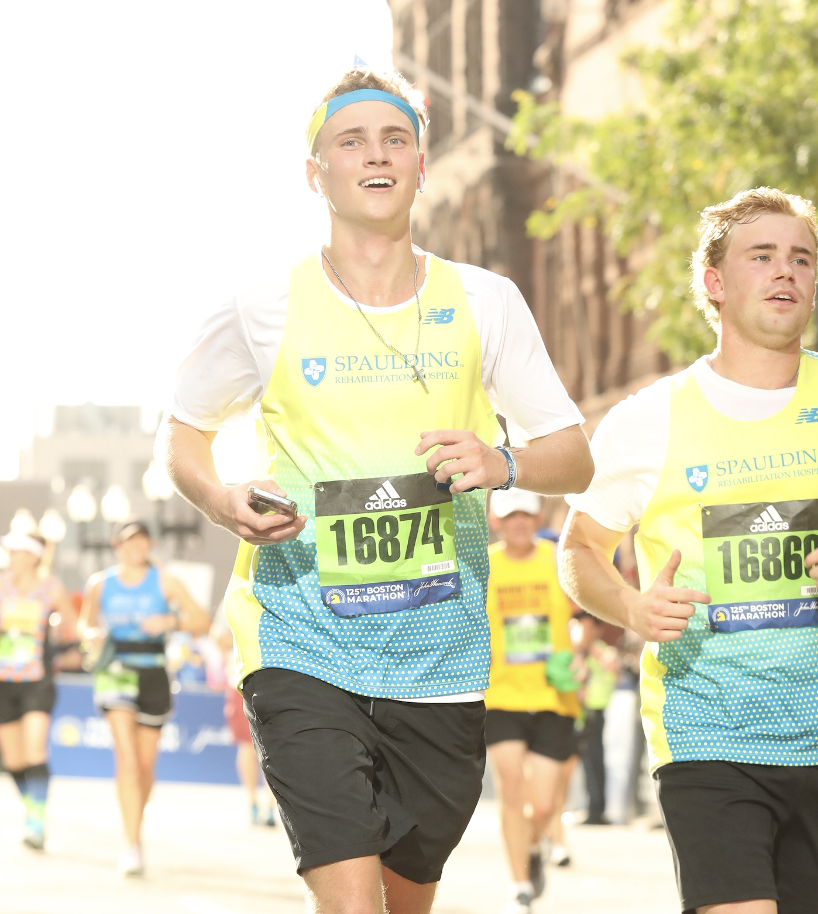

Phone Number
+1 781 296 6009
I'm a
To me, a dataset is more than numbers — it's a chorus of untold stories. My passion lies in giving those stories a voice and transforming them into strategies that inspire real-world change.

MS Data Science
Every project begins with unfamiliar questions. I've tackled them in startup research labs, in fields of crops, in Harvard classrooms, and in fast-moving SaaS companies, shaping data into insights that drive action. Whether detecting battery failures or guiding business strategy, I adapt quickly and turn raw information into meaningful impact.
Now the unfamiliar question lands with you: who to hire? Let me do what I do best—turn ambiguity into clarity and data into impact—and together we'll write the next story.
Years of Data Education
Projects Completed
Computer Fried
Solo Study Room Hours
Bringing data to life through code, modeling, and visualization.
Explore highlights from my data journey below. For a complete, up-to-date resume, download the PDF version: Download Resume
Data scientist (Harvard MS) focused on building scalable, high-impact analytics and real-time detection systems. Passionate about turning complex, messy data into clear insights and practical products at the intersection of technology, business, and strategy.
Titan Advanced Energy Solutions
Invaio Sciences
Hi Marley
Tech4Kidz
Syracuse University
Harvard University | John A. Paulson School of Engineering and Applied Sciences
Relevant Coursework: Machine Learning, Deep Learning, Systems Development for CS, MLOps, Data Visualization.
Syracuse University | School of Information Studies
Concentrations: Data Analytics & Project Management. Summa Cum Laude, GPA: 3.94/4.00. Awards & Activities: SU Scholars Nominee, Mentor (InclusiveU), Philanthropy Chair (Psi Upsilon), Boston Marathon Runner.
Hover over a tile to preview each project, and click to explore a full summary — including supporting materials like GitHub repositories, reports, and visualizations when available. Use the categories on the left to filter projects by the key skills showcased in each.
There's always more running in the background. Click below to see the bugs that make me, me.
Minor updates, odd features, and a few fun bugs that keep life interesting beyond the screen.


 


Got a project, a question, or just want to say hey? I'm all ears.
Fill out the form below and I'll get back to you as soon as I can.